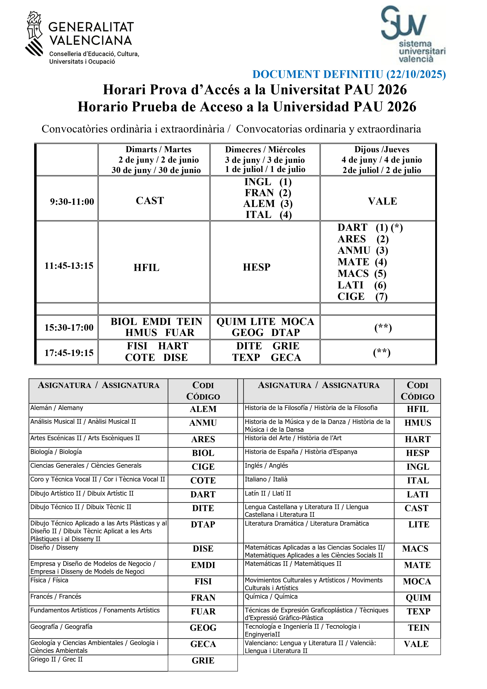

Todo lo que necesitas saber sobre las PAU 2026
Guía del estudiante
1. Estructura de las pruebas
Fase Obligatoria
Te examinas de:
- Lengua Castellana y Literatura II
- Valenciano: Lengua y Literatura II
-
Lengua Extranjera II: Alemán / Inglés / Francés / Italiano
- Puedes elegir cualquiera de los 4 aunque no lo hayas cursado.
-
Historia de España o Historia de la Filosofía
- A elegir entre las dos.
- Una materia específica obligatoria de modalidad (*)
(*) Qué materia de modalidad te toca (según tu modalidad):
- Artes
- Vía Artes Plásticas, Imagen y Diseño → Dibujo Artístico II (obligatoria).
- Vía Música y Artes Escénicas → eliges Análisis Musical II o Artes Escénicas II.
- Ciencias y Tecnología → eliges Matemáticas II o Matemáticas Aplicadas a las CCSS II.
- Humanidades y CCSS → eliges Latín II o Matemáticas Aplicadas a las CCSS II.
- General → Ciencias Generales (obligatoria).
Fase Voluntaria
- Si quieres mejorar tu nota de admisión hasta 14 puntos, puedes presentarte a materias para ponderar.
- Puedes elegir materias las hayas cursado o no.
- Máximo: 3 materias, o 4 si una es segunda lengua extranjera.
- Todas las asignaturas de la PAU 2026 sirven para ponderaciones en la preinscripción 2026.
- Consulta las ponderaciones AQUÍ.
2. Características de los exámenes
Por norma general, los exámenes suelen tener las siguientes características:
- Duración: 1 hora y media cada examen
- Descanso: 45 minutos entre exámenes.
- Nota: de 0 a 10, con dos decimales.
- Cada examen tendrá una única opción con preguntas variadas; contestarás según el criterio de optatividad indicado en el propio examen.
- ¡OJO! Hay penalizaciones por faltas de ortografía.
- La nota de acceso a la titulación se calcula con la nota de acceso a la universidad (40% F. Obligatoria + 60% media Bachillerato) sumado a los dos exámenes ponderados.
- En FP, la nota de acceso a la titulación se calcula con la media de FP sumado a los dos exámenes ponderados.
- La media de los exámenes realizados en la Fase Obligatoria debe ser,como mínimo, un 4.
- Las notas que ponderan valen para admisión durante los 3 cursos siguientes.
¡IMPORTANTE!Recuerda que, si tienes algún tipo de necesidad educativa, puedes pedir adaptaciones para los exámenes a principio de. Infórmate a través del Dpto. de Orientación de tu centro educativo a principio de curso.
¿Qué debes decidir?
- El idioma de Lengua Extranjera II (recuerda: cursada o no cursada) para la F. Obligatoria.
- Historia de España o Historia de la Filosofía para la F. Obligatoria.
- La materia de modalidad para la F. Obligatoria.
- Si vas a por nota alta: recomendable 2–3 materias para la F. Voluntaria que mejor ponderen.
Calendario PAU 2026
Convocatoria ordinaria · Junio
- Matriculación: 18–22 de mayo (hasta las 14:00)
- Exámenes: 2, 3 y 4 de junio
(posible 5 de junio si hay solapamientos) - Corrección: 5–10 de junio
- Notas: 12 de junio (desde las 13:00)
- Revisiones: 15–17 de junio (hasta las 14:00)
- Resolución revisiones: 19 de junio
- Ver exámenes:
- Castellón y Valencia: 22–23 de junio
- Alicante: 25–26 de junio
- Visualización:
- Castellón y Valencia: 26 de junio
- Alicante: 29 de junio
Convocatoria extraordinaria · Julio
- Matriculación: 15–18 de junio (hasta las 14:00)
- Exámenes: 30 de junio, 1 y 2 de julio
(posible 3 de julio si hay solapamientos) - Corrección: 3–6 de julio
- Notas: 7 de julio (desde las 17:00)
- Revisiones: 8–10 de julio (hasta las 14:00)
- Resolución revisiones: 14 de julio
- Petición ver exámenes: 15–16 de julio
- Visualización de exámenes: 20 de julio
Horario PAU 2026
Puedes revisar a continuación el horario de los exámenes. En caso de solapamientos, consulta las especificaciones que se indican en el documento de Conselleria.


Horario en PDF
Accede al PDF oficial con el horario y las especificaciones por solapamientos, así como otras cuestiones relacionadas entre éste y las asignaturas escogidas para examinarse.